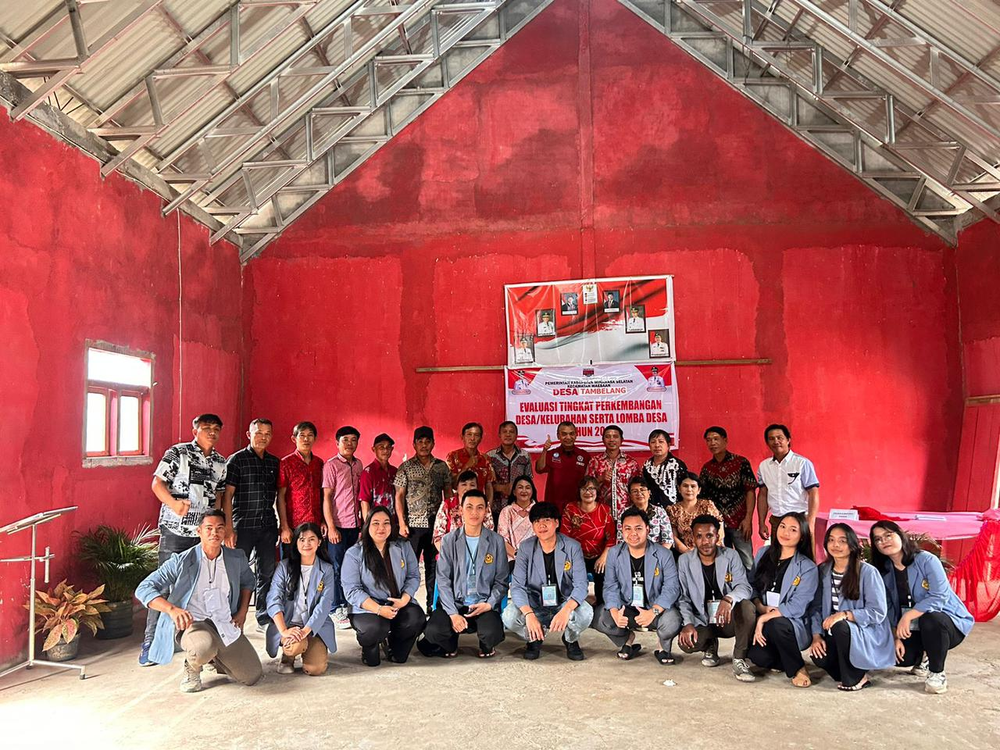
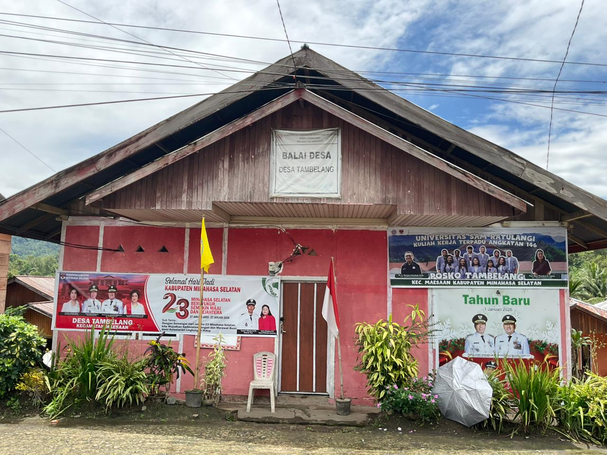
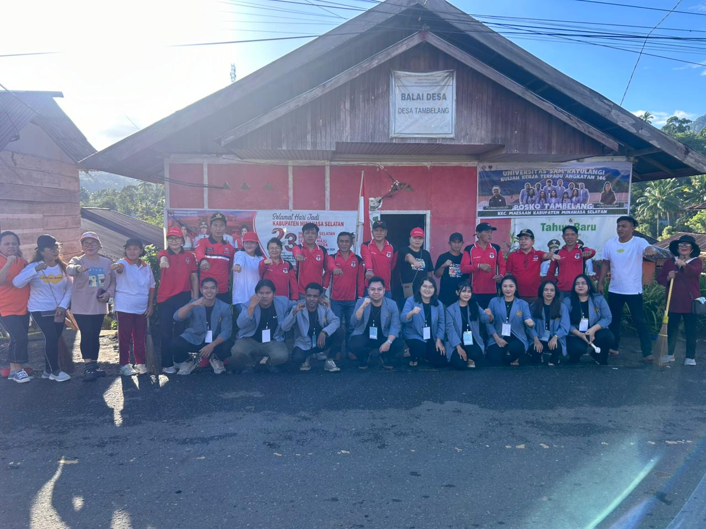
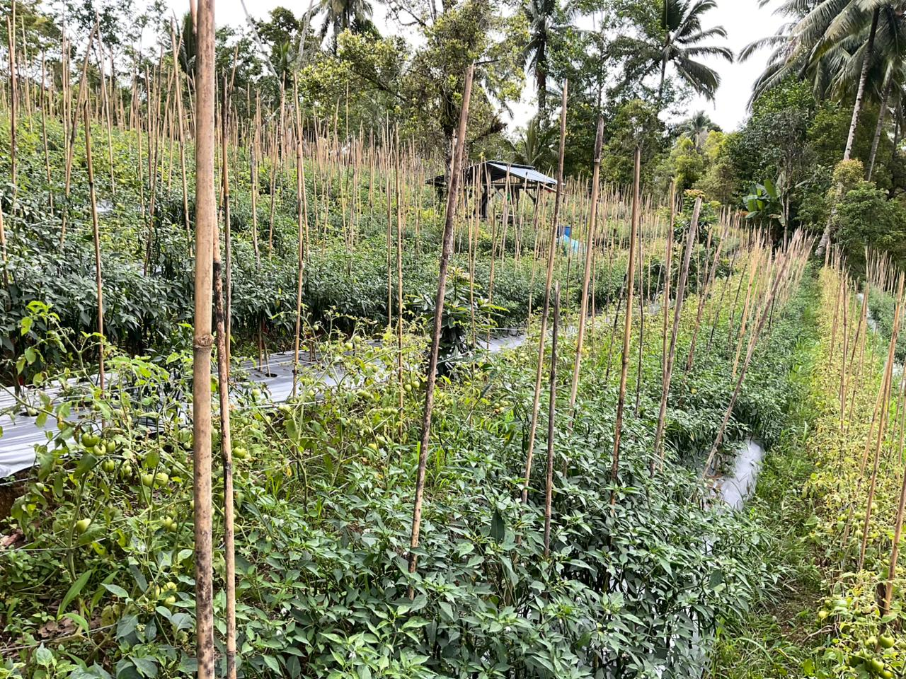
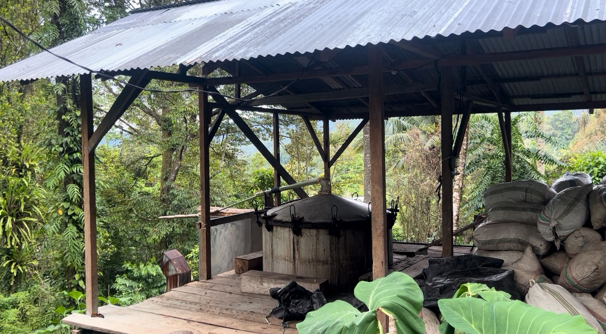
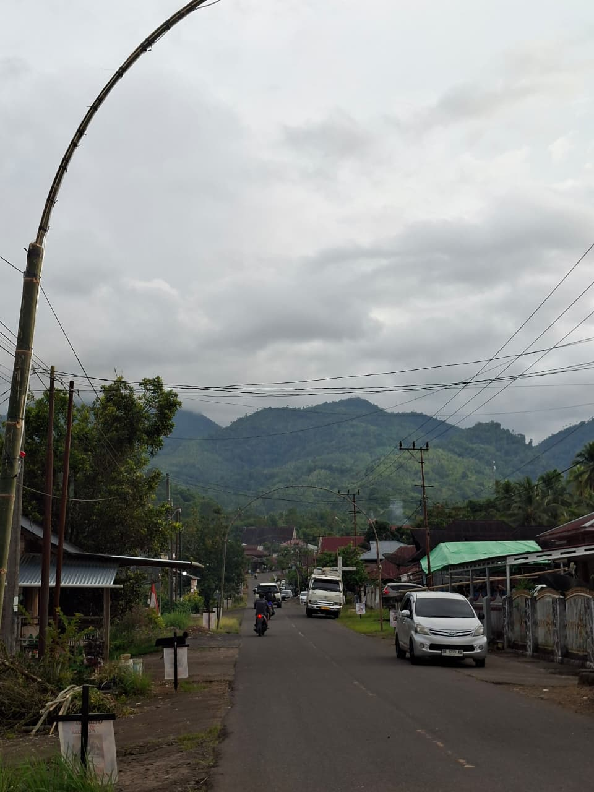

Kabupaten Minahasa Selatan · Kecamatan Maesaan
Diresmikan sejak 28 November 1928 — sebuah desa yang kini berusia 97 tahun, kaya tradisi dan warisan alam Minahasa.
Mengenal Lebih Dekat
Foto Desa

Evaluasi Tingkat Perkembangan Desa

Balai Desa Tambelang

Kegiatan Gotong Royong Warga

Pertanian Warga

Penyulingan Nilam

Jalan Desa & Pemandangan Alam
Mayoritas penduduk berprofesi sebagai petani. Komoditas utama:
Perekonomian
Dari tanaman padi ladang dan jagung pada masa awal berdirinya desa, kini pertanian Tambelang berkembang menjadi multi-komoditas. Cengkeh sebagai panen tahunan berpadu dengan tanaman bulanan — nilam, brenebon, cabai, tomat, dan bawang — memberikan pendapatan yang lebih stabil bagi rumah tangga petani.
Asal-Usul
Pedagang dari Desa Sonder bermarga Tambuwun menemukan kawasan yang masih berupa hutan. Tiga keluarga pertama — Pesik, Engkol, dan Sorongan — mulai membuka perkebunan di lahan yang subur ini.
Jumlah kepala keluarga yang membuka perkebunan bertambah menjadi 15 KK. Mereka mulai memilih untuk menetap di daerah ini secara permanen.
Pemerintah Belanda meresmikan desa ini pada 28 November 1928. Sudah 30–40 keluarga menetap. Nama "Tambelang" berasal dari banyaknya pohon bambu (bulu tempat bakar ikan/nasi jahe) yang disebut penduduk lokal sebagai "Tambelang".
Akses jalan yang sebelumnya bebatuan diaspal dan dilebarkan oleh Bapak Bupati Saerang, membuka konektivitas desa dengan daerah luar.
Dengan 654 KK yang terbagi ke 12 lingkungan, muncul usulan pemekaran desa. Setelah musyawarah panjang antara masyarakat dan tua-tua kampung yang mengutamakan persatuan, moratorium pemekaran akhirnya habis masa berlakunya tanpa realisasi.
"Sejarah Desa Tambelang bukan hanya cerita masa lalu, tetapi pedoman untuk melestarikan tradisi, budaya, serta nilai-nilai kebersamaan bagi generasi yang akan datang."
Pemerintahan
Susunan Organisasi dan Tata Kerja Pemerintahan Desa Tambelang
Peta & Koordinat